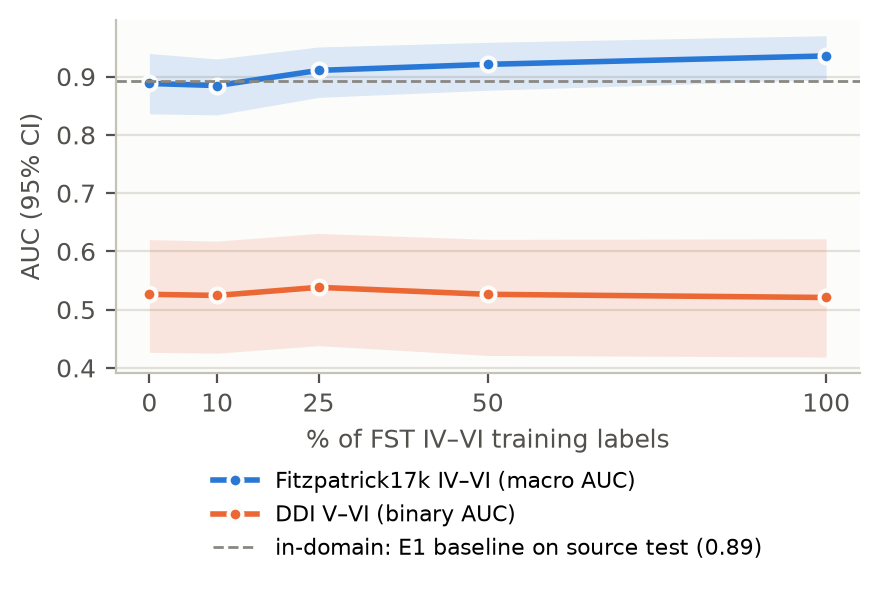
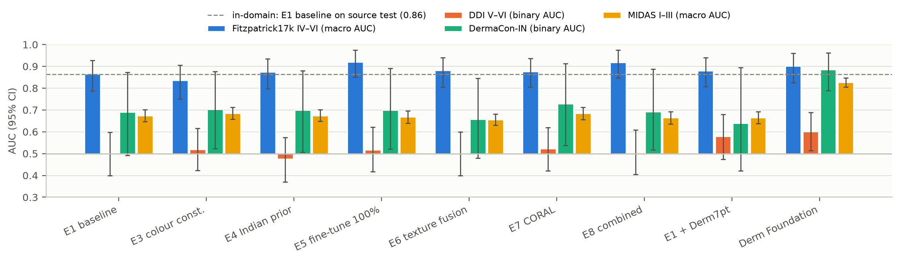
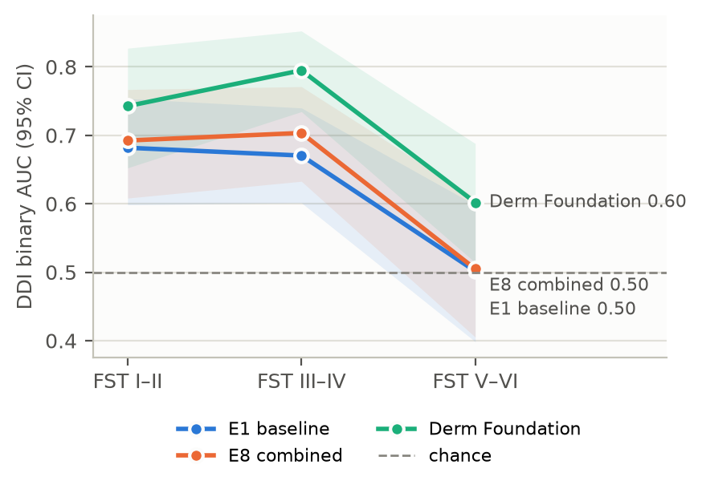

This document explains the whole project, including what we asked, what data we used, how the model works, what every experiment found and what comes next. It's written so that someone with no machine-learning background can follow it and then explain it to others. It's a companion to the semester plan of 10 Oct 2026; where the two differ, this document reflects what was actually built.
| Member | HT No | Branch |
|---|---|---|
| Ankita Vemavarapu | SE23UECM007 | ECM |
| Aeleni Deepak Reddy | SE23UARI005 | AI |
| Ranganaini Sai Ruchir | SE23UECM043 | ECM |
Supervisor: Dr. Anjli Varghese · Co-supervisor: Venkatasubramanian K. This is a research prototype, never a diagnostic tool.
AI skin cancer tools are mostly trained on photos of lighter skin. We wanted to know how much worse such a model does on darker skin and on Indian patients, and whether common fixes help.
We trained a model on lighter-skin photos and tested it on several outside datasets. On the darkest skin types, photographed at a hospital it had never seen, it did barely better than a coin flip and missed over a third of cancers, four times as many as on light skin at the same hospital.
We tried five standard fixes and a combination of them. None closed the gap at an outside hospital. The one thing that clearly helped was starting from a model pre-trained on a large, varied set of dermatology photos (Google's Derm Foundation). Even that still did worse on dark skin.
On everyday Indian clinic photos (fungal infections, vitiligo, acne), the models wrongly call many of them cancer. A real tool would first need a step that says "this isn't a tumour at all".
There are three main skin cancers:
Each has harmless lookalikes, such as moles, seborrhoeic keratoses ("barnacles of ageing") and dermatofibromas. Telling a cancer from its lookalike is the hard part.
Many papers claim AI can do this about as well as dermatologists. But almost all of the training photos come from the US, Europe and Australia, which means mostly lighter skin. A review of public skin cancer datasets found skin type was recorded for only about 2% of images (Wen et al., 2022).
Dermatologists describe skin with the Fitzpatrick Skin Type (FST) scale, from I to VI:
In this project, "source" means FST I–III, the skin we train on. "Target" means FST IV–VI, the skin we want the model to work well on.
On darker skin, lesions look different. Redness is harder to see, pigment contrast is different, and cancers are often found later. A model that only learned "cancer on pale skin" may miss cancers on brown skin, and a missed cancer is the dangerous kind of error. This is the domain shift problem: a model learns in one setting (the "domain") and is used in another.
Analogy: you learn to identify birds from a European field guide, then go birdwatching in India. Some birds are the same, but the light, the backgrounds and the species mix all differ. You'll make more mistakes, even though you "know birds".
India adds a second mismatch. Indian hospital series are dominated by BCC and SCC, while melanoma, the focus of most public data, is a minority and mostly acral (palms, soles, nails).
| # | Question | Experiment |
|---|---|---|
| RQ1 | How big is the gap between light and dark skin, and which cancers get mistaken for which lookalikes? | E1, E2 |
| RQ2 | Do epidemiology-guided choices help? That means cleaning up the image for darker skin, and telling the model which cancers are common in India. | E3, E4 |
| RQ3 | Does adding hand-measured texture information help? | E6 |
| RQ4 | How much dark-skin labelled data closes the gap? How much does "statistical alignment" close with no labels at all? | E5, E7 |
| — | Does the best combination of fixes do better? | E8 |
| Term | What it means |
|---|---|
| Model / classifier | A program that looks at a photo and outputs four probabilities, e.g. BCC 10%, SCC 70%, melanoma 5%, benign 15%. The biggest one is its answer. |
| Training | Showing the model thousands of labelled photos so it adjusts its internal numbers to get more of them right. |
| Train / validation / test | The textbook it studies, the practice exams used to make decisions (when to stop, which version is best), and the final exam used only to report results. Peeking at the final exam while studying makes the score meaningless. Most of our rules exist to prevent that. |
| AUC | Our main score. Pick one random cancer photo and one random non-cancer photo: AUC is the chance the model rates the cancer as more suspicious. 1.0 is perfect and 0.5 is a coin flip. Roughly, 0.9 is excellent, 0.8 good, 0.7 fair and 0.6 weak. |
| Binary vs macro AUC | Binary means cancer vs not-cancer. Macro is the average of "BCC vs rest", "SCC vs rest", "melanoma vs rest" and "benign vs rest". |
| Missed-cancer rate | The share of real cancers the model calls benign. This is the dangerous error. |
| False-alarm rate | The share of harmless lesions the model calls cancer. It causes anxiety, unnecessary biopsies and overloaded clinics. |
| Confidence interval (CI) | 0.50 [0.40, 0.60] means our best estimate is 0.50, and the true value probably lies between 0.40 and 0.60. Small test sets give wide intervals. If two methods' intervals overlap heavily, we can't claim one is better. |
| Seed | Training involves randomness. We train every model three times (seeds 0, 1 and 2) and average, so one lucky run can't fool us. |
| Pre-trained / transfer learning | Instead of a blank model, we start from one that already learned to see from about a million everyday photos (ImageNet: dogs, cars, cups). It already knows edges, textures and shapes; we then teach it skin lesions. |
| Fine-tuning | Taking an already-trained model and training it a bit more on new data. |
| Dataset | Role | Why it's there |
|---|---|---|
| Fitzpatrick17k | Training (FST I–III) and target train/val/test (FST IV–VI) | About 16,500 photos from online dermatology atlases, each labelled with a diagnosis and a skin type. We use only the cancer and lookalike images. |
| PAD-UFES-20 (Brazil) | Training (FST I–III). Its 60 FST IV–VI images form a test-only set. | Biopsy-confirmed smartphone photos from a Brazilian clinic. |
| DDI (Stanford) | Test only. The most important test. | 656 images, every lesion biopsy-proven, all skin types. It comes from a different hospital, with real clinic photos rather than textbook ones. Its licence forbids showing its images, so we only report numbers. |
| DermaCon-IN (India) | Test only | Only 65 are cancers or lookalikes (19 cancers, 46 lookalikes). The other 5,379 are everyday conditions: tinea, vitiligo, scabies, acne, psoriasis, eczema. We use them to ask how often the model wrongly cries "cancer" on ordinary Indian patients. |
| MRA-MIDAS (Stanford) | Test only | 1,380 biopsy-proven photos, 96% lighter skin. It measures the effect of changing hospital without changing skin tone. |
| Derm7pt (Italy) | Extra training data, one experiment | About 1,000 clinical photos, added because our training set had very few melanomas and benign lesions. |
The full image set. Many of Fitzpatrick17k's images originally came from a website whose links are now dead. We asked the authors, and they sent the complete set of 16,577 images. Every result in this document uses it. Earlier runs on a partial download (1,919 of 4,491 relevant images) were development runs only: they helped us find and fix protocol problems, but none of their numbers are reported.
Why most sets are test-only. We train only on Fitzpatrick17k and PAD-UFES-20 (plus Derm7pt in one experiment). DDI, DermaCon-IN, MIDAS and PAD's dark-skin images are never trained on, because they represent the real question: does the model work somewhere it has never been?
Raw medical datasets are messy. Before any training, five steps run once, and their outputs are frozen in the repository. Nobody re-splits afterwards, so every experiment uses exactly the same data.
The datasets use 460 different diagnosis names, such as "superficial spreading melanoma", "morpheiform BCC", "dermatosis papulosa nigra" and "Bowen's disease". Each one has to go into one of our classes:
Code rules make a first pass, then humans review every row. The first pass is done; the team still needs to confirm it.
A special case: actinic keratosis (AK). AK is a pre-cancer, so calling it either "benign" or "cancer" would be medically wrong. We never train on it. Instead, we test the models on 311 AK images as a side analysis. The baseline calls 90% of them malignant, which is understandable, since AK really can turn into SCC.
One big table with one row per image: label, skin type, patient ID, body site, source dataset, and the exclusion reason if there is one. Images with unknown skin type are dropped, because we can't study skin type without knowing it.
The same mole is often photographed twice, re-cropped, or watermarked and reposted. If one copy lands in training and the other in the test, the model simply remembers it, which is peeking at the final exam. Images are grouped when any of these holds:
The thresholds were chosen by inspecting real pairs by eye. At looser settings, unrelated "small brown spots" started matching.
Light skin is split 70 / 15 / 15 (train / validation / test). Dark skin is split 60 / 20 / 20. A duplicate group is never split across two sets, and the code checks this automatically.
| Set | Images | BCC | SCC | Melanoma | Benign |
|---|---|---|---|---|---|
| Source train (light) | 2,022 | 902 | 400 | 337 | 383 |
| Source val / test (light), each | 435 | 194 | 86 | 72–73 | 82–83 |
| Target train (dark) | 257 | 65 | 70 | 61 | 61 |
| Target val / test (dark), each | 86 | 22 | 23–24 | 20–21 | 20 |
Notice how small the dark-skin sets are: 86 test images, 20 of them benign. That's why the intervals on those numbers are wide.
If the dark-skin test set held fewer than 15 SCC images, we would merge BCC and SCC into one class, because scores on so few examples are just noise. There are 23, so we kept four classes.
We use EfficientNet-B0, a well-known, compact image-recognition network (a convolutional neural network, or CNN), pre-trained on ImageNet. We replace its original 1,000-way "dog / car / cup" output with a small final layer that outputs our four probabilities. To check the results aren't a quirk of one architecture, we repeat the main experiment with a second, older network, ResNet50 (E2).
How a CNN sees: early layers detect edges and colour blobs, middle layers detect textures and shapes, and late layers detect whole concepts. The final layer turns all of that into "how much does this look like BCC, SCC, melanoma or benign?"
| Stage | What is trained | Settings |
|---|---|---|
| 1 | Only the new final layer; everything else is frozen. It learns the four-class task quickly without disturbing what the network already knows. | 5 epochs (full passes over the data), learning rate 1e-3 |
| 2 | The top 3 blocks of the network are unfrozen and gently adapted to skin. | Up to 30 epochs; head 1e-4, backbone 3e-5; stops early if no improvement for 5 epochs |
The learning rate is how big each adjustment is. We tested three values for stage 2 on validation data and chose 3e-5. The plan's 1e-5 hadn't finished learning within the time budget.
These rules are a big part of the project's value. Many published results are inflated by quietly breaking them.
DECISIONS.md (decisions D1–D23).Analogy for the operating point: you set a smoke alarm's sensitivity in your own kitchen. Then you install it in a different house. Does it still go off when it should?
The key number throughout is DDI V–VI: the darkest skin, at a hospital the model has never seen. All numbers are means over three seeds, with 95% intervals in brackets where they matter.
Train on light skin only, then test everywhere.
| Test set | AUC | Cancers missed (fixed cut-off) |
|---|---|---|
| Light skin, same sources (source test) | 0.89 (macro) | 10% |
| Dark skin, same atlases (Fitzpatrick17k IV–VI) | 0.89 (macro) | 14% |
| DDI FST I–II (new hospital, light) | 0.65 | 9% |
| DDI FST III–IV | 0.66 | 16% |
| DDI FST V–VI (new hospital, dark) | 0.53 [0.43, 0.62] | 36% |
| MIDAS (new hospital, light skin) | 0.69 | 40% |
| DermaCon-IN (India) | 0.71 | 26% |
Maybe the model is thrown by lighting and contrast rather than by skin itself. We tested three classic fixes, each on its own, and then all together:
Result:
Subtle extra finding: CLAHE missed fewer dark-skin cancers at DDI at the fixed cut-off (26% vs 36%), but its AUC barely moved (0.55 vs 0.53). It shifts the model's scores rather than making it better at telling cancer from benign.
What it means: the problem can't be fixed by adjusting colour or contrast. The difficulty with dark skin is deeper than lighting.
Published Indian hospital series show a cancer mix of roughly BCC 45 : SCC 40 : melanoma 15, which differs from our training data. If the model "expects" the Indian mix, maybe it does better on Indian patients. We tried this two ways:
We also tried the mixes from three regional series: Malwa-Punjab, Central India and Manipur.
Result: the validation score didn't move (0.915 retrained, 0.92 with the prior shift, vs 0.916). India (0.71 → 0.73–0.74) and MIDAS (0.69 → 0.70–0.71) went up slightly, inside the noise, and DDI V–VI not at all (0.51–0.52). The two approaches agree, and all four regional mixes agree. Fewer Indian non-cancer photos were called cancer at the default decision (47% → 41%), but the same 43% at the fixed cut-off.
What it means: the expected mix shifts the model's guesses between cancer types (more SCC, less melanoma). It doesn't help separate cancer from benign on dark skin, which is the real problem.
We took the baseline and trained it a bit more on 10%, 25%, 50% and 100% of the 257 dark-skin training images, to draw a learning curve.
A bug we found and fixed. In the development run, the 10% subset (17 images) was smaller than one batch of 32. The code dropped incomplete batches, so the model got zero training steps, and the "10% result" was really just the baseline. We spotted it in the training logs, not from test results. We gave every fraction the same number of training steps and re-ran it.
| Dark-skin images used | 0 | 28 | 67 | 130 | 257 |
|---|---|---|---|---|---|
| Same-atlas dark-skin test | 0.89 | 0.89 | 0.91 | 0.92 | 0.94 |
| DDI V–VI (outside hospital) | 0.53 | 0.52 | 0.54 | 0.53 | 0.52 |

What it means: this is one of the most important results.
Analogy: studying past papers from one teacher makes you great at that teacher's exams. It doesn't make you good at the subject.
Dermatologists look at texture: scaliness, network patterns, roughness. We computed 78 classic texture numbers per image:
We joined these to the network's own 1,280-number description of the image and trained a small classifier on top. We also trained a fair control that used only the network's description. Without it, any gain could just come from the new classifier rather than from texture.
Result:
Inside the network, each image becomes a list of 1,280 numbers. If light-skin and dark-skin images produce differently shaped "clouds" of these numbers, the decision layer tuned on light skin will misjudge dark skin.
CORAL adds a penalty during training that pushes the two clouds towards the same spread and correlation pattern (the same covariance). Crucially, it needs dark-skin images but not their diagnoses, and unlabelled photos are much easier to get than biopsy-confirmed ones.
A fix to the plan. The plan's penalty strengths (λ = 0.1, 1, 10) would have made the penalty about 0.1% of the training signal, so it would effectively have done nothing. We used the CORAL paper's own balancing rule instead, which gives λ ≈ 1000, and tested 100, 1000 and 10000.
Result:
We combined the components that beat the baseline on validation: E5 fine-tuning (clearly) and E4 Indian weighting (barely). We ran the combination on both networks.
Result: the same as E5 alone, with DDI V–VI at 0.51 (EfficientNet) and 0.54 (ResNet50). The best combination of the planned methods does not close the gap at another hospital.
Once the planned methods failed, we asked what does move the needle.
| Extra | What it is | DDI V–VI | Takeaway |
|---|---|---|---|
| Seed ensemble | Average the three seeds' predictions | 0.50 | The seeds already agree; randomness isn't the problem |
| 320 px + flip TTA | Bigger images; at test time, average over 4 flipped versions | 0.51 | Helps light-skin outside hospitals (India 0.69 → 0.76), not dark skin |
| + Derm7pt | About 950 extra Italian training photos | 0.60 | Best bump among CNNs, but more false alarms on Indian photos (43% → 60%): its benign photos are almost all moles |
| Derm Foundation | Google's dermatology model, kept frozen; we train only one simple layer on top | 0.61 [0.52, 0.69] | Best on every outside set |
| Test set | Our baseline | Derm Foundation |
|---|---|---|
| DDI FST I–II | 0.65 | 0.78 |
| DDI FST III–IV | 0.66 | 0.83 |
| DDI FST V–VI | 0.53 | 0.61 (interval above chance) |
| DermaCon-IN (India) | 0.71 | 0.86 |
| MIDAS (light skin, new hospital) | 0.69 | 0.82 |
Why it works: it was pre-trained on a large, varied set of skin photos rather than on dogs and cars. It has seen far more cameras, clinics and skin tones than our 2,022 training images ever could.
Caveats:

MIDAS makes this visible. It's a new hospital with mostly light skin, so it isolates the effect of the hospital itself: camera, lighting, photographer and patient mix. Most "dark skin" fixes only target the second gap, and they did so with dark-skin data from the same atlases. So they couldn't touch the first.
Image clean-up, Indian statistics, texture features, CORAL alignment and their combination all failed at outside hospitals. That's a meaningful negative result. These are exactly the methods many papers propose, and under strict no-peeking rules they don't solve the real-world version of the problem.
Better pre-training (Derm Foundation) is the one lever that moved every outside set. Diversity of experience beats clever tricks.

The model knows only four answers: BCC, SCC, melanoma or benign tumour. Show it a fungal infection and it must pick one of the four, often a cancer. On 5,379 everyday Indian clinic photos, the baseline calls 47% malignant and Derm Foundation calls 78%. Any real tool needs a first step that says "not a tumour / out of scope" before the cancer classifier runs.
Analogy: ask someone who only knows four dog breeds to identify a cat. They'll confidently name a dog breed.
A cut-off that catches 90% of cancers at home catches only 64% on dark skin at DDI, and there it raises false alarms on 66–71% of benign lesions, against 31% at home. Scores shift between sites, so real use would need re-calibration at each clinic.
| Limitation | Why it matters |
|---|---|
| Small dark-skin test sets | 86 target test images (20 benign); DDI V–VI has 207 images (48 cancers). Hence the wide intervals, and why we avoid claiming small differences. |
| Estimated skin type | Fitzpatrick types are judged from photos, not measured on patients. |
| Thin training classes | 337 melanomas and 383 benign images in training, against 902 BCC. |
| Possible pre-training overlap | Derm Foundation may have seen the public datasets; only its DDI, MIDAS and DermaCon-IN scores are clean. |
| Acral lesions | About 50 in the Fitzpatrick17k/PAD sets and 39 in MIDAS, too few for firm conclusions. |
| Atlas labels | Fitzpatrick17k diagnoses are atlas-scraped, not biopsy-verified. DDI (biopsy-proven) is the clean check. |
| # | Task | Status |
|---|---|---|
| 1 | Team confirms the label map (443 diagnosis → class rows) | First pass done; team review open |
| 2 | Check 100 lesion crops by eye and record the failure rate | Open (pilot contact sheet drafted) |
| 3 | Grad-CAM grid: heat-maps showing where the model looks | Open |
| 4 | Mid-semester review pack: data, splits, E1–E3 with intervals, gap figure, Grad-CAM | Open |
| 5 | Acral check | Too few images; counts only |
| 6 | IEEE-format report, 15-minute presentation, one-command reproduction on a clean machine | Open |
| 7 | Update the semester plan with the protocol changes listed in docs/PLAN_CHANGES.md | Open |
DDI access expires 12 Nov 2026. Any further DDI scoring must happen before then, or access must be renewed.
"AI skin cancer tools are trained mostly on light skin. We trained one and found it drops to near coin-flip accuracy on the darkest skin at an unfamiliar hospital, missing over a third of cancers. We tested five popular fixes; none solved it at an outside hospital. What helped was starting from a model pre-trained on lots of varied dermatology photos. We also found these tools wrongly flag many ordinary Indian skin conditions as cancer, so they need an 'is this even a tumour?' step first."
No. A carefully measured negative result is a finding. These fixes are widely proposed; we show, without test-set peeking, that they don't solve the real-world problem, and we identify what does help.
The 0.89 is on dark-skin photos from the same textbook atlases as training. The 0.53 is on real clinic photos from a different hospital. The atlas test mostly measures "same source", not "dark skin".
We did (E5), and it helped only on photos from the same source. The data needs to come from many different clinics and cameras.
The dark-skin test sets are small (86 and 207 images). That's also why we don't over-claim small differences.
Then there would be no honest outside test left. DDI's licence also restricts its use, and DermaCon-IN has only 65 relevant images.
Possibly for the public datasets, which we flag. DDI and MIDAS are access-controlled and DermaCon-IN post-dates the model, so those results stand.
It's a pre-cancer. Labelling it either "benign" or "cancer" would be medically wrong, so we score it separately.
No. It's a research prototype. It misses too many cancers on dark skin and raises too many false alarms on everyday conditions.
| You want… | Look at |
|---|---|
| The protocol rules and why they were chosen | DECISIONS.md |
| All results with commentary | docs/RESULTS.md |
| Setup and commands | README.md |
| Experiment settings, one file per experiment | configs/ (all built on base.yaml) |
| Data cleaning | src/skincancer/data/ |
| The network and CORAL loss | src/skincancer/models.py |
| Training | src/skincancer/train.py |
| Image clean-up (E3) | src/skincancer/preprocess.py |
| Texture features and fusion (E6) | features/texture.py, fusion.py |
| Derm Foundation | foundation.py, scripts/derm_foundation_embed.py |
| Scoring, intervals, prior shift | metrics.py, evaluate.py |
| One-time external scoring and its ledger | predict.py, runs/final_ledger.csv |
| Figures | reports/figures/ |
| Run everything | scripts/run_all.sh, scripts/run_extras.sh |
One design idea worth knowing: every model just writes a spreadsheet of predictions (an image ID plus four probabilities). All scoring, intervals and figures read only those spreadsheets. Adding a new method means producing that spreadsheet, and everything else works automatically.